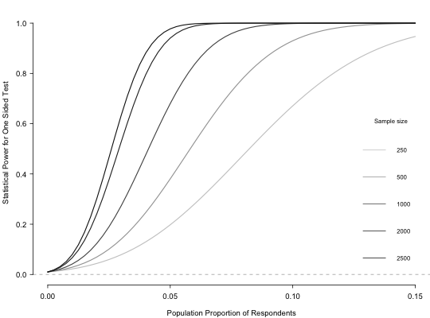

power.rr.plot generates a power analysis plot for randomized response
survey designs.
power.rr.plot(p, p0, p1, q, design, n.seq, r, presp.seq, presp.null = NULL, sig.level, prespT.seq, prespC.seq, prespT.null = NULL, prespC.null, type = c("one.sample", "two.sample"), alternative = c("one.sided", "two.sided"), solve.tolerance = .Machine$double.eps, legend = TRUE, legend.x = "bottomright", legend.y, par = TRUE, ...)
| p | The probability of receiving the sensitive question (Mirrored Question Design, Unrelated Question Design); the probability of answering truthfully (Forced Response Design); the probability of selecting a red card from the 'yes' stack (Disguised Response Design). |
|---|---|
| p0 | The probability of forced 'no' (Forced Response Design). |
| p1 | The probability of forced 'yes' (Forced Response Design). |
| q | The probability of answering 'yes' to the unrelated question, which is assumed to be independent of covariates (Unrelated Question Design). |
| design | Call of design (including modified designs) used: "forced-known", "mirrored", "disguised", "unrelated-known", "forced-unknown", and "unrelated-unknown". |
| n.seq | A sequence of number of observations or sample sizes. |
| r | For the modified designs only (i.e. "forced-unknown" for Forced
Response with Unknown Probability and "unrelated-unknown" for Unrelated
Question with Unknown Probability), |
| presp.seq | For a one sample test, a sequence of probabilities of possessing the sensitive trait under the alternative hypothesis. |
| presp.null | For a one sample test, the probability of possessing the
sensitive trait under the null hypothesis. The default is |
| sig.level | Significance level (Type I error probability). |
| prespT.seq | For a two sample test, a sequence of probabilities of the treated group possessing the sensitive trait under the alternative hypothesis. |
| prespC.seq | For a two sample test, a sequence of probabitilies of the control group possessing the sensitive trait under the alternative hypothesis. |
| prespT.null | For a two sample test, the probability of the treated
group possessing the sensitive trait under the null hypothesis. The default
is |
| prespC.null | For a two sample test, the probability of the control group possessing the sensitive trait under the null hypothesis. |
| type | One or two sample test. For a two sample test, the alternative and null hypotheses refer to the difference between the two samples of the probabilities of possessing the sensitive trait. |
| alternative | One or two sided test. |
| solve.tolerance | When standard errors are calculated, this option specifies the tolerance of the matrix inversion operation solve. |
| legend | Indicator of whether to include a legend of sample sizes. The
default is |
| legend.x | Placement on the x-axis of the legend. The default is
|
| legend.y | Placement on the y-axis of the legend. |
| par | Option to set or query graphical parameters within the function.
The default is |
| ... | Additional arguments to be passed to |
This function generates a power analysis plot for randomized response survey designs, both for the standard designs ("forced-known", "mirrored", "disguised", "unrelated-known") and modified designs ("forced-unknown", and "unrelated -unknown"). The x-axis shows the population proportions with the sensitive trait; the y-axis shows the statistical power; and different sample sizes are shown as different lines in grayscale.
Blair, Graeme, Kosuke Imai and Yang-Yang Zhou. (2014) "Design and Analysis of the Randomized Response Technique." Working Paper. Available at http://imai.princeton.edu/research/randresp.html.
## Generate a power plot for the forced design with known ## probabilities of 2/3 in truth-telling group, 1/6 forced to say "yes" ## and 1/6 forced to say "no", varying the number of respondents from ## 250 to 2500 and the population proportion of respondents ## possessing the sensitive trait from 0 to .15. presp.seq <- seq(from = 0, to = .15, by = .0025) n.seq <- c(250, 500, 1000, 2000, 2500) power.rr.plot(p = 2/3, p1 = 1/6, p0 = 1/6, n.seq = n.seq, presp.seq = presp.seq, presp.null = 0, design = "forced-known", sig.level = .01, type = "one.sample", alternative = "one.sided", legend = TRUE)## Replicates the results for Figure 2 in Blair, Imai, and Zhou (2014)